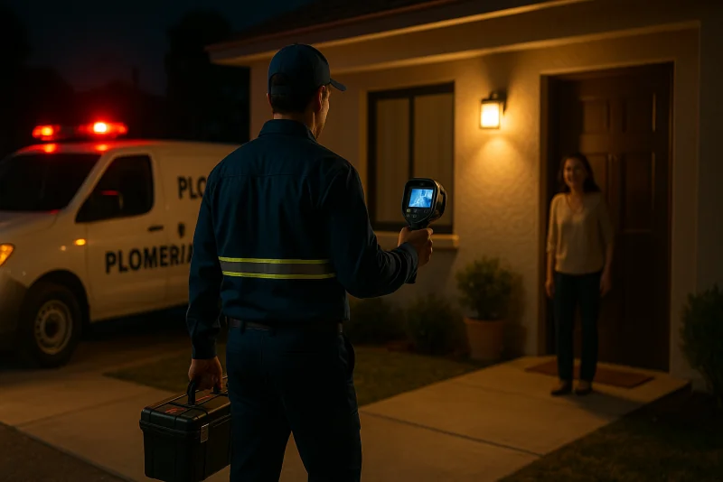
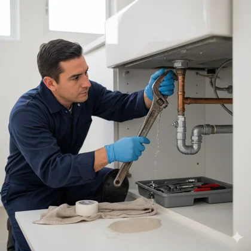
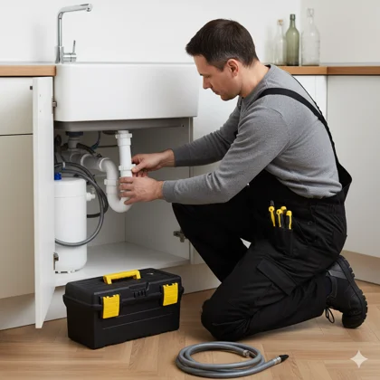
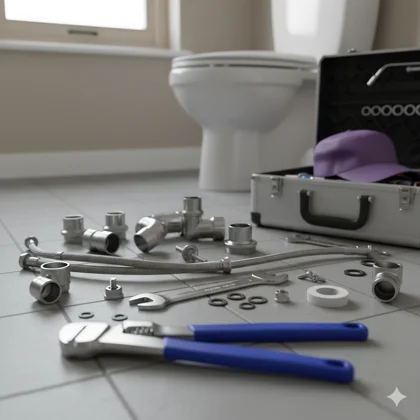
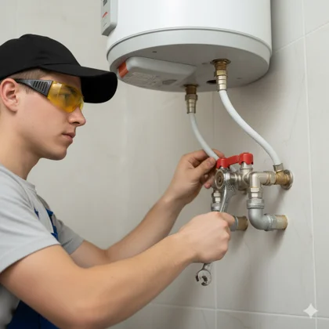
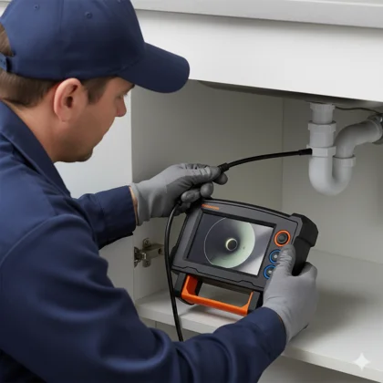

Cómo Detectar Fugas de Agua en Casa
Aprende a detectar fugas con métodos sencillos. Ahorra hasta 40% en tu recibo de agua detectando fugas a tiempo. Guía paso a paso con prueba del medidor.
Leer artículo completo →¿Necesitas un plomero ya? Atendemos urgencias las 24 horas, los 365 días del año: madrugadas, fines de semana y días festivos. Llegamos en 30-60 minutos a cualquier colonia de Culiacán.
WhatsApp: 52 667 392 2273 · Llamadas: 667 392 2273
Solicitar Urgencia
Lo busques como busques, es el mismo servicio: un plomero urgente en Culiacán que contesta a cualquier hora y sale en cuanto cuelgas. Nada de "le agendamos para mañana". Si escribes a las 3 de la tarde o llamas a las 3 de la madrugada, siempre hay un técnico certificado disponible, porque operamos los 365 días del año, incluyendo Navidad, Año Nuevo y puentes. La línea la atiende una persona, no una contestadora, y por WhatsApp respondemos en menos de 10 minutos con tiempo estimado de llegada confirmado.
La diferencia con un plomero de cita programada es que llegamos equipados para resolver, no para "ver qué tiene". Nuestras unidades traen geófono y termografía para localizar fugas ocultas sin romper de más, sonda rotativa para drenajes con obstrucciones severas o raíces, bombas de achique para inundaciones y refacciones comunes de boiler, WC y mezcladoras. Por eso la mayoría de las emergencias — fugas, destapes, tuberías rotas, calentadores y bombas — se resuelven en una sola visita, sin segunda llamada ni regreso al día siguiente.

Fugas en muros, techos y patios que inundan. Detección profesional y reparación inmediata garantizada para evitar daños mayores.

Drenaje completamente tapado, inodoro que no drena. Destape manual y con maquinaria especializada. Limpieza completa del sistema.

Sanitarios rotos, lavabos y mezcladoras con fuga. Instalación profesional con garantía, disponible las 24 horas.

Reparación urgente de calentadores con fugas o sobrecalentamiento. Diagnóstico completo y atención inmediata para prevenir accidentes.

Diagnóstico urgente de problemas de presión y soluciones efectivas. Revisión de bomba, tinaco y red hidráulica.
Detección y reparación urgente de fugas de gas. Cierra la llave de paso, abre ventanas y llámanos de inmediato. Atención prioritaria.
Drenaje tapado, fuga visible, olor a gas, boiler que no enciende o caída súbita de presión. También atendemos emergencias graves: inundaciones con bomba de achique, tuberías rotas y cortes de agua repentinos.
Cierra la llave principal y contáctanos ahora.
WhatsApp: 52 667 392 2273Atendemos urgencias las 24 horas en Las Quintas, Tres Ríos, Chapultepec, La Campiña, Guadalupe, Barrancos, Stanza Toscana, Alturas del Sur, Terranova, Chulavista y toda la zona urbana de Culiacán. Nuestras unidades móviles están distribuidas estratégicamente para llegar rápido sin importar la hora o el día. Tiempos promedio de llegada por zona:
¿Tu colonia no aparece? Escríbenos y confirmamos cobertura urgente.
Cotización previa a cualquier trabajo. Incluye revisión completa, mano de obra básica y limpieza del área.
Recargo por urgencias: El servicio de emergencia nocturna (10pm–6am) y días festivos tiene un cargo base de $500 a $800 MXN por visita, más el costo de la reparación específica. En horario diurno (6am–10pm) no hay recargo por urgencia. Te informamos el costo total antes de iniciar cualquier reparación. Consulta más detalles en nuestra página de precios de plomería.
Sin sorpresas.
"Llamé a las 2 AM por una fuga enorme en el baño. Llegaron en 40 minutos y resolvieron el mismo día. Muy profesionales."
— Roberto, Las Quintas"Domingo en la noche, drenaje tapado. Me atendieron por WhatsApp y llegaron rapidísimo. Precio justo y todo impecable."
— Patricia, Tres Ríos"Olor a gas en la madrugada. Vinieron de inmediato y encontraron la fuga. Me salvaron de un accidente grave."
— Luis, ChapultepecSí, ofrecemos servicio de plomero 24 horas en Culiacán los 365 días del año, sin excepción. Atendemos madrugadas, fines de semana y días festivos con el mismo tiempo de respuesta que en horario regular. Nuestro tiempo promedio de llegada es de 30 a 60 minutos desde que nos contactas por WhatsApp o llamada al 667 392 2273. Un técnico certificado se dirige a tu domicilio con las herramientas y refacciones necesarias para resolver la emergencia en la primera visita.
El tiempo promedio de llegada de madrugada es de 30 a 60 minutos en colonias como Las Quintas, Tres Ríos, Chapultepec, Centro y Guadalupe. En zonas más alejadas puede tomar hasta 90 minutos. Al contactarnos por WhatsApp al 667 392 2273 te confirmamos el tiempo exacto de llegada según tu colonia antes de salir. Las emergencias críticas — fugas de gas o inundaciones activas — tienen prioridad inmediata sin importar la hora.
Atendemos todas las emergencias de plomería 24 horas: fugas de agua severas en tuberías, muros o tinaco; fugas de gas con riesgo inmediato; WC desbordándose o drenaje principal tapado; boiler sin agua caliente; tuberías rotas; caída súbita de presión; y cualquier situación que no pueda esperar hasta el día siguiente. Llegamos equipados para resolver en la primera visita sin necesidad de una segunda llamada.
El servicio de emergencia nocturna (10pm–6am) y días festivos tiene un cargo base de $500 a $800 MXN por visita, más el costo de la reparación específica. En horario diurno (6am–10pm) no hay recargo por urgencia. El diagnóstico está incluido en la visita y siempre cotizamos antes de iniciar cualquier trabajo. Aceptamos efectivo, tarjeta y transferencia bancaria. Emitimos factura SAT el mismo día.
No. Las emergencias se atienden de inmediato sin cita previa. Escríbenos por WhatsApp al 667 392 2273 o llama directamente — describe brevemente la emergencia y confirmamos el tiempo de llegada. Para servicios programados (instalaciones, mantenimiento) sí agendamos cita con al menos 2 horas de anticipación, pero cualquier urgencia se atiende al instante sin importar el horario.
Sí, trabajamos los 365 días del año, incluyendo Navidad, Año Nuevo y puentes. Sábados, domingos y festivos la línea sigue atendida por personal capacitado — no usamos contestadoras, siempre recibe respuesta humana. Aplican los recargos por horario publicados en nuestra sección de precios (+20% fin de semana, +40% festivo), que te informamos junto con la cotización antes de iniciar cualquier trabajo.
Sí. Para emergencias graves llegamos con equipo especializado: bombas de achique para extraer agua de inundaciones, geófono y termografía para localizar la fuga sin romper de más, y herramienta y materiales para reparar tuberías rotas en el momento. Aunque sea madrugada, te damos precio cerrado antes de empezar, para que la urgencia nunca se convierta en un cobro sorpresa.
Aceptamos efectivo, tarjeta de crédito o débito y transferencia bancaria, y emitimos factura SAT el mismo día si la necesitas. Todas las reparaciones urgentes incluyen garantía escrita de 6 meses, que te enviamos por WhatsApp junto con el comprobante del servicio. Si el problema reaparece dentro del periodo de garantía, regresamos sin costo adicional.
Con más de 15 años de experiencia en el sector, somos especialistas en soluciones de plomería residencial y comercial con servicio de urgencias 24/7. Nuestro equipo de profesionales certificados está comprometido con brindar un servicio de calidad, puntual y garantizado a cualquier hora del día o la noche.
Más de 15 años sirviendo a la comunidad 24/7
Todos nuestros servicios incluyen garantía
Cotizaciones transparentes sin costos ocultos
Guías técnicas y consejos profesionales para mantener tu hogar
Aprende a detectar fugas con métodos sencillos. Ahorra hasta 40% en tu recibo de agua detectando fugas a tiempo. Guía paso a paso con prueba del medidor.
Leer artículo completo →
Guía completa de mantenimiento preventivo para boilers Noritz. Extiende la vida útil de tu equipo y evita reparaciones costosas con esta checklist profesional.
Leer artículo completo →
¿Baja presión en regadera o lavabo? Descubre las 7 causas principales y sus soluciones. Desde tinaco hasta bomba hidroneumática, todo lo que necesitas saber.
Leer artículo completo →
Compara métodos caseros vs profesionales para desatascar un WC. Cuándo usar destapa caños, bomba manual o llamar a un plomero. Evita daños mayores.
Leer artículo completo →
Todo lo que debes saber antes de comprar e instalar un tinaco: capacidad ideal, materiales, marcas recomendadas y costos de instalación en Culiacán.
Leer artículo completo →
Identifica las señales de un drenaje tapado antes de que sea una emergencia. Consejos de prevención específicos para Culiacán y métodos de destape profesional.
Leer artículo completo →Disponibles 24/7 para emergencias. Escríbenos por WhatsApp al 52 667 392 2273 o llama al 667 392 2273.
Atención inmediata en toda la ciudad.
Teléfono: (667) 392-2273
WhatsApp: +52 667 392 2273
Email: info@plomeroculiacanpro.mx
Horario: 24 horas, 7 días a la semana
Emergencias: Atención inmediata cualquier hora